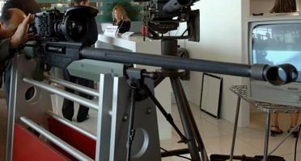
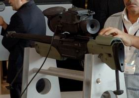
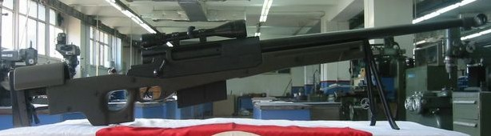

| Kale
Grubu'na baðlý Kalekalýp Savunma ve Havacýlýk Direktörlüðü,
Abu Dhabi'de 12-17 Þubat tarihleri arasýnda gerçekleþen dünyanýn
en önemli savunma fuarlarýndan IDEX (8. International Defence
Exhibition & Conference) Fuarý'nda, Türkiye'nin ilk özgün
dizayný olan 50 Kalibre Keskin Niþancý Tüfeði'ni sergilemiþ
ve bu konuda portalýmýzda daha önce bir haber
de yapýlmýþtý.
Hafif
zýrhlý araçlara yönelik üretilen silah, 5 mermi alýyor ve
etkili menzili bin 800 metre. Yaklaþýk 2 bin dolar fiyatý
olan bu tüfeðin fiyatý ilave aksesuarlar (dürbün vb.) ile
birlikte 20 bin dolara çýkabiliyor.
Silahýn
kullanýcý kolaylýðýný arttýrmak için ikinci protoip geliþtirmesi
de sonuçlandý ve 27-30 Eylül 2005 tarihinde 75. yýl Ankara
Hipodromu'nda düzenlenen IDEF
'05 7. ULUSLARARASI SAVUNMA SANAYÝÝ FUARI'nda ilk defa
sergilendi (Daha büyük görmek için resimleri týklayýnýz):

Yeni
tasarým tamamen Kalekalýp mühendislerinin tasarladýðý modüler,
kullanýcý kolaylýðýna sahip yepyeni bir 50 kalibre Keskin
Niþancý Tüfeði olmuþtur. Silahýn hafifletme çalýþmalarý devam
etmekte ve 50 kalibre Keskin Niþancý Tüfekleri içinde en hafifi
olmasý hedefleniyor. Bunun için yüksek teknoloji hammaddelerinin
(Havacýlýk alüminyumlarý, titanyum) kullanýlýyor.
Önceki
model dýþ görünüþ itibariyle Dünya'daki diðer bazý modellere
benzese de çalýþan tüm mekanizmalarý tamamen Kalekalýp Ar-Ge
mühendislerince sýfýrdan tasarlanmýþtýr. Yeni tasarlanan bu
model ise hiçbir 50 kalibre Keskin Niþancý Tüfeðine benzememektedir:
|
|
|
Kalekalýp
Savunma ve Havacýlýk Direktörü Murathan Toprak, TSK
adýna standllarýna gelen bir ziyaretçiye silahýn yeni
modeli hakkýnda bilgi verirken. Fotoðraflar: CHA
|
Silahýn
teknik özellikleri:
- Namlu
çapý:12.7mm
- Kütle:
14kg
- Boy:
147cm
- Namlu
boyu: 73cm
- Etkili
menzil: 1700m
- Þarjor
kapasitesi: 5 adet
- Sökülebilir
dipçikli
- Sökülebilir
çatal ayak ve arka ayak
- Ayarlanabilir
yanak dayama
- Ayarlanabilir
omuz dayama
- Picatinny
rail baðlý
Kalekalýp
Ar-Ge Blümü kullanýcý beklenti ve isteklerine göre son degiþiklikleri
yapýyor. Kýsa bir süre sonra testlere baþlayanacak...

Tüfeðin
ilk prototipine ait Kalekalýp Fabrikasý'nda çekilen bir fotoðraf
Kalekalýp
hakkýnda: (www.kalekalip.com.tr)
Bir
ülkenin gerçek anlamda sanayileþmesinin ancak yatýrým mallarý
üretimi ile mümkün olabileceði prensibinden yola çýkarak,
1969 senesinde Türk Sanayiinin ihtiyaç duyduðu çeþitli makine
ve kalýp imatýný gerçekleþtirmek üzere kurulmuþ olan KaleKalýp
Makina ve Kalýp Sanayi A.Þ. bugün yüzlerce çalýþaný, yurt
içi ve yurt dýþý tesisleri ile Türkiye'nin lider sanayi kuruluþlarýndan
biri haline gelmiþtir.
SAVUNMA
ve HAVACILIK BÖLÜMÜ: Türk Silahlý Kuvvetleri ve dost ülkelerin
ordularýnýn ihtiyaç duyduðu çeþitli silah sistemlerinin tasarýmý
ve imalatýný gerçekleþtiren þirketimiz, dünyanýn en büyük
sanayi kuruluþlarýna da önemli savunma projelerinde alt yapýmcýlýk
yapmaktýr.
GAZ
EKÝPMANLARI BÖLÜMÜ: Þirketimiz
teknik alandaki bilgi ve tecrübe birikimini gaz sektörüne
de aktarma kararý ile þu anda Kale Enerji direktörlüðü adý
altýnda faaliyet gösteren Gaz Ekipmanlarý bölümünü kurmuþtur.
Domestik ve Endüstüriyel sayaçlarý, basýnç düþürme istasyonlarý
üretimi yanýnda Hollandalý Habo Firmasý ortaklýðýnda Kojenerasyon
üniteleri pazarlamaktadýr.
KALIP
APARATLARI BÖLÜMÜ: Firmanýn
kuruluþundan bu yana faaliyet gösteren Kalýp bölümü, Kale
Grubu firmalarýnýn ihtiyaç duyduðu seramik kalýplarý, plastik
enjeksiyon ve metal kesme, þekillendirme kalýplarýnýn yanýsýra,
yurtiçi ve yurtdýþý firmalara yönelik küp þeker kalýplarý
ve çeþitli aparat/fikstürlerin üretimini gerçekleþtiriyor.
Daha
fazla bilgi için:
- Bu
silahýn ilk versiyonuna ait bir haber daha önce portalýmýzda
yayýnlanmýþtý:
- www.kale.com.tr/haberler/basinda_kale.asp
> Basýnda Kale Grubu (önceki modele ait basýnda çýkan
haberler)
- Kalekalýp'tan
keskin niþancý tüfeði, Güneþ, 13 Mayýs 2005
- Kalekalýp'ýn
tüfeðine dýþardan yoðun talep, Dünya, 13 Mayýs 2005
- Kalekalýp'tan
niþancý tüfeði, Dünya, 13 Mayýs 2005
- Kalekalýp'tan
niþancý tüfeði, Dokuz Sütun, 13 Mayýs 2005
- Kalekalýp
savunma sanayinde iddialý, Dünden Bugüne Tercüman, 13
Mayýs 2005
- Kale'den
nokta atýþý, Akþam, 13 Mayýs 2005
- www.usakgundem.com/haber.php?id=518
> Kale Keskin Niþancý Tüfeði Üretti, Sýrada Piyade Tüfeði
Var, USAK Stratejik Gündem, 24 Haziran 2005 (önceki modele
ait bir haber)
|